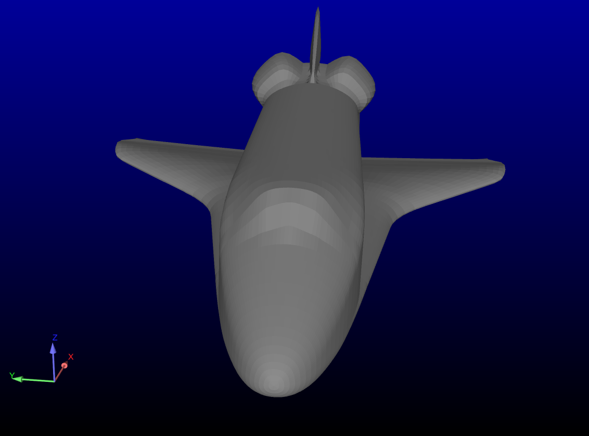
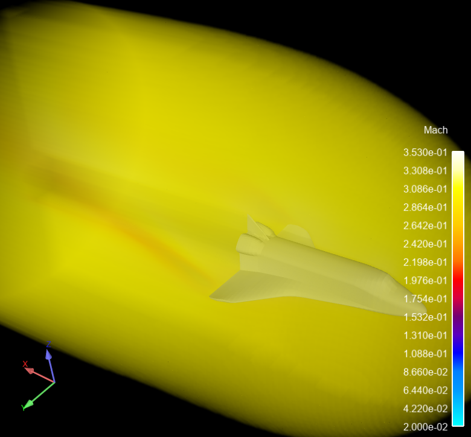
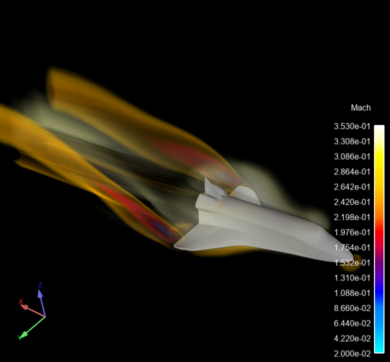

Note
Go to the end to download the full example code.
Volume Rendering to Visualize Flow#
Utilize EnSight to demonstrate the value of Volume Rendering as a tool to visualize flow in 3D
This script will work with EnSight 2024 R2 or higher.
Start an EnSight session#
Launch and connect to an instance of EnSight. This example uses a local EnSight installation and an interactive EnSight GUI (batch=False).
from ansys.pyensight.core import LocalLauncher
session = LocalLauncher(batch=False).start()
Load a dataset#
Load Shuttle Session file included in the EnSight installation and render
xyz_file = f"{session.cei_home}/ensight{session.cei_suffix}/data/plot3d/shuttle.xyz"
q_file = f"{session.cei_home}/ensight{session.cei_suffix}/data/plot3d/shuttle.q"
session.load_data(
data_file=xyz_file,
result_file=q_file,
file_format="PLOT3D",
representation="3D_feature_2D_full",
)
# disable the ground planes (if any). These can be skipped for EnSight prior to 2024 R2
session.ensight.scene.ground_plane_normal("+Z")
session.ensight.scene.ground_plane_visible("OFF")
# LPARTS are loadable parts in EnSight. The idea here is to take the
# only structured part available and build after it a 2D surface, that
# is the body surface. This is accomplished just selecting the max
# values of the I,J,K directions and then loading the LPART
lpart = session.ensight.objs.core.CURRENTCASE[0].LPARTS[0]
lpart.NODEMAX = [53, 63, 1]
lpart.load()
# Hide the original volume part
session.ensight.part.select_begin(1)
session.ensight.part.visible("OFF")
# disable highlighting.
session.ensight.view.highlight_parts("OFF")
session.show("image", width=800, height=600)
Set up the Scene#
Load the “Mach” variable and color parts by the variable. Create a volume clip object that will be volume rendered.
session.ensight.objs.core.PARTS[1].COLORBYRGB = [0.6, 0.6, 0.6]
session.ensight.objs.core.PARTS[0].COLORBYPALETTE = "Mach"
session.ensight.function.palette("Mach")
session.ensight.function.modify_begin()
session.ensight.function.restore_predefinedpal("use_new_levels", "Magma")
session.ensight.function.modify_end()
# Create a box clip that will be volume rendered
session.ensight.part.select_begin(1)
session.ensight.clip.begin()
session.ensight.clip.domain("volume")
session.ensight.clip.tool("xyz_box")
session.ensight.clip.sample_step(128, 128, 128)
session.ensight.clip.origin(-0.497170001, 1.27204275, -0.879772604)
session.ensight.clip.axis("x", 0, 0, 1)
session.ensight.clip.axis("y", 0, -1, 0)
session.ensight.clip.axis("z", 1, 0, 0)
session.ensight.clip.length(2.24244738, 1.27204275, 3.60410643)
session.ensight.clip.end()
session.ensight.clip.create()
# Display amd range the palette
session.ensight.legend.select_palette_begin("Mach")
session.ensight.legend.visible("ON")
session.ensight.function.palette("Mach")
session.ensight.function.range(0, 0.527223)
session.ensight.legend.width(0.024464285)
session.ensight.legend.height(0.628260851)
session.ensight.function.range(0.02, 0.353)
# Color the volume part by Mach and force a redraw
p = session.ensight.objs.core.PARTS["Volume_clip"][0]
p.COLORBYPALETTE = session.ensight.objs.core.VARIABLES["Mach"][0]
session.ensight.refresh(force=1)
# Select a black background color
v = session.ensight.objs.core.VPORTS[0]
v.BACKGROUNDTYPE = session.ensight.objs.enums.VPORT_CONS
v.CONSTANTRGB = [0.0, 0.0, 0.0]
# Enable part symmetry for "Zone 1" and "Volume_clip"
parts = session.ensight.objs.core.PARTS[("Zone 1", "Volume_clip")]
parts.set_attr("SYMMETRYTYPE", session.ensight.objs.enums.VISUAL_SYMM_MIRROR)
parts.set_attr("SYMMETRYMIRRORY", 1)
# set up a view
session.ensight.viewport.select_begin(0)
session.ensight.view_transf.initialize_viewports()
session.ensight.view_transf.rotate(47.9834213, 164.538452, 0)
session.ensight.view_transf.rotate(80.5524902, -9.46153545, 0)
session.ensight.view_transf.rotate(-13.1767969, -36.6923141, 0)
session.ensight.view_transf.zoom(0.539702117)
session.ensight.view_transf.zoom(0.923283696)
session.ensight.view_transf.zoom(0.996746957)
session.show("image", width=800, height=600)
Set the Color Opacity Mapping#
The key to all volume rendering visualization is the color palette mapping. Here we adjust the opacity of various bands to make different ranges more or less opaque.
session.ensight.function.palette("Mach")
session.ensight.function.point(13, "alpha", 0.901578, 0.000000)
session.ensight.function.point(12, "alpha", 0.733333, 0.000000)
session.ensight.function.point(11, "alpha", 0.727589, 0.675544)
session.ensight.function.point(10, "alpha", 0.662061, 0.672927)
session.ensight.function.point(9, "alpha", 0.610090, 0.000000)
session.ensight.function.point(8, "alpha", 0.526485, 0.000000)
session.ensight.function.point(7, "alpha", 0.506149, 0.686010)
session.ensight.function.point(6, "alpha", 0.431582, 0.686010)
session.ensight.function.point(5, "alpha", 0.384131, 0.000000)
session.ensight.function.point(4, "alpha", 0.291488, 0.000000)
session.ensight.function.point(3, "alpha", 0.264372, 0.693860)
session.ensight.function.point(2, "alpha", 0.198844, 0.699093)
session.ensight.function.point(1, "alpha", 0.135576, 0.000000)
session.ensight.function.point(0, "alpha", 0.000000, 0.000000)
session.ensight.function.alpha_volume_scale(4.0)
session.ensight.refresh(force=1)
session.show("image", width=800, height=600)
Close the connection and shut down the EnSight instance.
# sphinx_gallery_thumbnail_path = '_static/07_volume_render_3.png'
session.close()